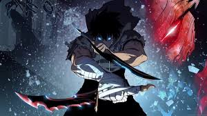
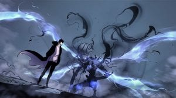

Манхва "Solo leveling" или "Поднятие уровня в одиночку"
Соло выравнивание (корейский: 나 혼자만 레벨업; RR: Na honjaman REBEREOP; лит. (Поднятие уровня в одиночку) - это веб-южно-корейский роман, написанный Чуонг. Он был сериализован в цифровой комической и художественной платформе Kakao KakaoPage с 25 июля 2016 года, а затем опубликован компанией D&C Media под своим лейблом Papyrus с 4 ноября 2016 года. Роман был лицензирован на английском языке компанией Web novel под названием Only I Level Up.Адаптация webtoon была сериализована в KakaoPage с 4 марта 2018 года, иллюстрированная Чан Сон-раком (он же Дубей), который является генеральным директором Redice Studio. Его первый сезон завершился 19 марта 2020 года. Его второй сезон возобновил сериализацию с 1 августа 2020 года. Отдельные главы собраны и опубликованы D&C Media в трех томах по состоянию на июль 2020 года. Solo Leveling был переведен на многие языки с помощью фанатских переводов.


Пилот
С тех пор как появился портал, соединяющий наш мир с миром, полным монстров и существ всех видов, некоторые люди приобрели силы и способность охотиться на них: их называют охотниками. Главный герой этой истории, Сун Чжин-У, является самым слабым из рисовых и карри-ландеров и едва ли сильнее обычного человека. Его товарищи-охотники прозвали его "самым слабым". Однажды он и другие охотники оказываются в ловушке в чрезвычайно опасном подземелье, и только немногие из них выживают и умудряются бежатьСам Сун Чжин У едва выживает и является единственным, кто завершает все испытания в этом подземелье. Затем он превращается в "игрока", который теперь может видеть интерфейс, показывающий ему квесты, статистику, инвентарь, Магазин и уровни. Удастся ли ему выровняться, чтобы стать самым могущественным охотником?